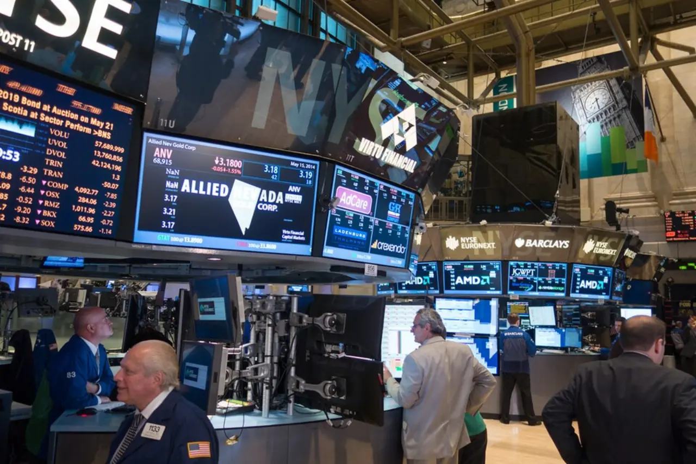

BLOX ETF를 볼 때 가장 먼저 눈에 들어오는 것은 분배금입니다. 크립토라는 단어와 주기적인 현금흐름이 함께 붙어 있으면, 독자는 자연스럽게 “비트코인과 이더에 투자하면서 이자처럼 받는 상품인가”를 떠올리게 됩니다. 하지만 이 상품은 그렇게 단순하게 읽으면 안 됩니다. BLOX는 비트코인이나 이더를 직접 보유하는 현물 코인 계좌가 아니라, 상장지수펀드와 크립토 관련 기업 주식, 옵션 전략을 한 바구니에 담아 운용하는 액티브 상장지수펀드입니다.
분배금은 어디서 나오나

운용사 자료에서 BLOX의 핵심은 “크립토 노출”과 “옵션을 통한 인컴”입니다. 여기서 인컴은 예금 이자처럼 약속된 돈이 아닙니다. 보유 자산 위에 옵션을 얹어 프리미엄을 얻거나, 포트폴리오 운용 과정에서 나온 이익을 분배하는 구조에 가깝습니다. 그래서 분배율 숫자만 보고 안정적인 현금흐름 상품처럼 받아들이면 위험을 과소평가하게 됩니다.
옵션 프리미엄은 시장 변동성이 클수록 커질 수 있지만, 그만큼 기초자산 가격도 크게 흔들립니다. 크립토 관련 주식과 비트코인·이더 관련 상장상품이 동시에 빠지는 날에는 분배금이 있어도 순자산가치가 더 크게 줄 수 있습니다. “받는 돈”과 “줄어드는 원금”을 한 화면에서 같이 봐야 하는 이유가 여기에 있습니다.
BLOX의 분배금은 매번 같은 품질의 수익이 아닐 수 있습니다. 운용사 공시와 투자설명서에는 분배가 보장되지 않고, 분배 규모가 달라질 수 있으며, 경우에 따라 자본 반환 성격이 섞일 수 있다는 위험이 제시됩니다. 투자자가 확인해야 할 것은 분배율의 높낮이가 아니라 그 분배가 순자산가치 훼손 없이 만들어졌는지입니다.
코인을 직접 사는 상품은 아님
BLOX는 비트코인과 이더 가격에 접근하지만, 지갑에 코인을 담는 방식과는 다릅니다. 공식 자료 기준으로 이 펀드는 미국에 상장된 비트코인·이더 관련 ETF나 상장상품을 활용하고, 여기에 크립토 산업 기업을 함께 편입할 수 있습니다. 채굴 기업, 거래 플랫폼, 결제·지갑·탈중앙금융 관련 기업, 블록체인 인프라 기업이 후보군이 됩니다.
이 구조는 장점과 단점이 분명합니다. 직접 코인을 보관하지 않아도 증권계좌에서 접근할 수 있고, 여러 크립토 관련 자산을 한 번에 담을 수 있습니다. 반대로 비트코인 가격이 올랐다고 BLOX가 같은 폭으로 오르리라는 보장은 없습니다. 포트폴리오 안에 현금성 자산, 크립토 기업 주식, 비트코인·이더 상장상품, 옵션 포지션이 섞이면 결과는 코인 가격과 달라질 수 있습니다.
특히 크립토 기업 주식은 코인 가격만 보지 않습니다. 채굴 기업은 전력비와 채굴 난이도, 장비 교체 부담을 받습니다. 거래 플랫폼은 거래대금과 규제 환경에 민감합니다. 반도체나 데이터센터 관련 기업이 섞이면 인공지능 설비투자 흐름까지 영향을 줄 수 있습니다. 그래서 BLOX를 볼 때는 “비트코인 대체재”보다 “크립토 산업 묶음에 옵션 전략을 붙인 ETF”로 읽는 편이 더 정확합니다.
옵션은 방어막이 아닙니다
옵션 전략은 이름만 들으면 위험을 줄여주는 장치처럼 보이지만, 실제로는 수익과 손실의 모양을 바꾸는 도구입니다. 보유 자산 위에 콜옵션을 팔면 프리미엄을 받을 수 있지만, 시장이 강하게 오를 때 상승분 일부를 놓칠 수 있습니다. 반대로 하락장이 오면 옵션 프리미엄이 손실을 조금 줄여줄 수는 있어도 기초자산 하락 자체를 없애지는 못합니다.
크립토 시장의 변동성은 옵션 전략을 매력적으로 보이게 만듭니다. 변동성이 높으면 프리미엄도 커질 수 있기 때문입니다. 그러나 변동성은 수입원이면서 동시에 위험의 이름입니다. 비트코인과 이더, 채굴주, 거래소주, 관련 ETF가 함께 흔들리면 옵션 프리미엄은 손실을 설명하는 작은 항목으로 밀릴 수 있습니다.
투자설명서가 강조하는 파생상품 위험도 이 지점과 연결됩니다. 옵션은 상대방, 청산, 유동성, 가격평가, 기초자산과의 불완전한 연동 문제를 가질 수 있습니다. 특히 BLOX처럼 여러 자산을 섞은 펀드는 어떤 옵션을 어느 종목에 얼마나 붙였는지에 따라 성과가 크게 달라집니다. 단순히 “옵션이 있으니 방어적”이라고 부르기 어렵습니다.
확인할 숫자는 따로 있습니다
BLOX를 검토할 때는 분배율보다 먼저 순자산가치 흐름을 봐야 합니다. 최근 분배금이 높아도 순자산가치가 계속 낮아졌다면, 투자자는 현금흐름을 받는 동안 기초 원금이 얼마나 줄었는지 함께 계산해야 합니다. 분배락 이후 가격이 얼마나 회복되는지, 시장가격이 순자산가치보다 비싸거나 싸게 거래되는지도 확인해야 합니다.
두 번째는 보유 종목입니다. 비트코인과 이더 관련 상장상품 비중이 어느 정도인지, 크립토 기업 주식이 어떤 업종에 몰려 있는지, 현금성 자산과 단기국채 비중이 얼마나 되는지 봐야 합니다. 운용사가 매일 공개하는 보유 내역이 있다면, 분배금보다 그 표가 더 중요한 자료가 됩니다. ETF의 이름은 같아도 포트폴리오는 계속 바뀔 수 있기 때문입니다.
세 번째는 비용과 세금입니다. BLOX는 액티브 운용과 옵션 전략을 쓰기 때문에 단순 지수 ETF처럼 낮은 비용만 보고 접근할 상품이 아닙니다. 총보수, 다른 펀드를 편입하면서 생기는 간접비용, 매매 회전율, 분배금의 세금 성격을 함께 확인해야 합니다. 특히 해외 ETF를 국내 투자자가 거래할 때는 배당소득, 양도차익, 환율, 원천징수 문제까지 실제 수익률에 영향을 줍니다.
마지막으로 거래량과 스프레드를 봐야 합니다. ETF는 상장돼 있어도 거래량이 얇으면 원하는 가격에 사고팔기 어렵습니다. 매수호가와 매도호가 차이가 크거나 장중 순자산가치와 가격 차이가 벌어지면, 상품 구조와 별개로 거래 비용이 커집니다. 고분배 상품일수록 이 작은 비용들이 누적될 수 있습니다.
BLOX ETF는 크립토를 현금흐름형 상품처럼 포장한 단순한 이야기로 읽기보다, 변동성 높은 자산 위에 옵션과 분배 정책을 얹은 복합 상품으로 봐야 합니다. 매력은 분명히 있습니다. 증권계좌 안에서 비트코인·이더 관련 노출과 크립토 산업 주식, 옵션 프리미엄을 한 번에 볼 수 있기 때문입니다. 다만 확인해야 할 순서는 분배율이 아니라 순자산가치, 보유 종목, 옵션 포지션, 비용, 세금, 거래 유동성입니다. 이 순서가 지켜질 때 BLOX는 “얼마를 주는 ETF인가”가 아니라 “어떤 위험을 현금흐름으로 바꿔 보여주는 ETF인가”로 읽히게 됩니다.